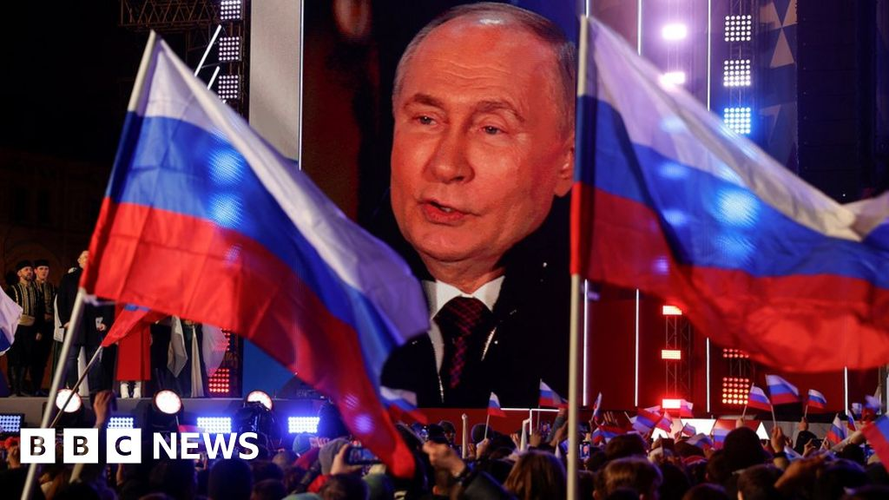

Tour de headlines

-
🥇
Vladimir Putin extends reign as Russia's president. The man who was allowed to
score eight goals in a hockey game found even less resistance in his country's election,
which the White House called "obviously not free nor fair." Three days of voting with no
oversight at the polls or any meaningful opposition ended with Putin winning six more
years as Russia's leader, a position he has held as prime minister or president since
1999. There was pushback from citizens on Sunday—thousands of supporters of late
opposition leader Alexei Navalny, who died in an Arctic prison last month, made their
voices heard at a noon protest at polling centers. Still, with his landslide victory, Putin
could soon overtake Stalin as Russia's longest-serving leader in more than 200 years.
-
🥈
Netanyahu calls Schumer's comments "inappropriate." Israeli Prime Minister
Benjamin Netanyahu shot back at scathing criticism from Senate Majority Chuck Schumer
last week, saying Israel is not a "banana republic" and countries should not meddle in the
electoral affairs of other democracies (Schumer called on Israel to hold new elections).
Meanwhile, the first shipment of aid to Gaza by sea in almost 20 years—about 200 tons of
food—arrived on Saturday, organized by chef Jose Andres's Central Kitchen charity.
-
🥉
Fraud trial of "Britain's Bill Gates" begins today. In what prosecutors have called
the "largest fraud in the history" of Silicon Valley, UK tech mogul Mike Lynch faces 16
counts of criminal conspiracy and fraud stemming from the $11 billion sale of his software
company, Autonomy, to Hewlett-Packard in 2011. HP accused Autonomy of "serious
accounting improprieties" in November 2012, when HP announced an $8.8 billion write-
down of its value. A 2022 civil case in London found Lynch liable for defrauding HP; in
May 2023, he was extradited to stand trial in the US.